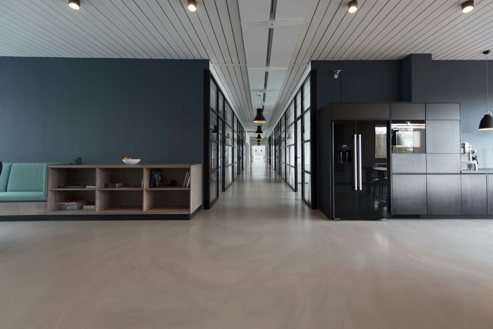

Gridworks
An operations workspace concept for teams coordinating tasks across functions.
Following a request through the team
A board is most useful when it reflects the work people actually do. Pick a recently finished request and trace where it waited, who clarified it and how everyone knew it was complete.
What to explore
 Workspace guide
Workspace guideIntake
Capture a request with a clear owner, objective and due date.
Explore ↗
Workspace guideWork queue
Group active items by stage so the team can spot dependencies.
Explore ↗Workspace guideReporting
Review completed work, outstanding decisions and recurring bottlenecks.
Explore ↗